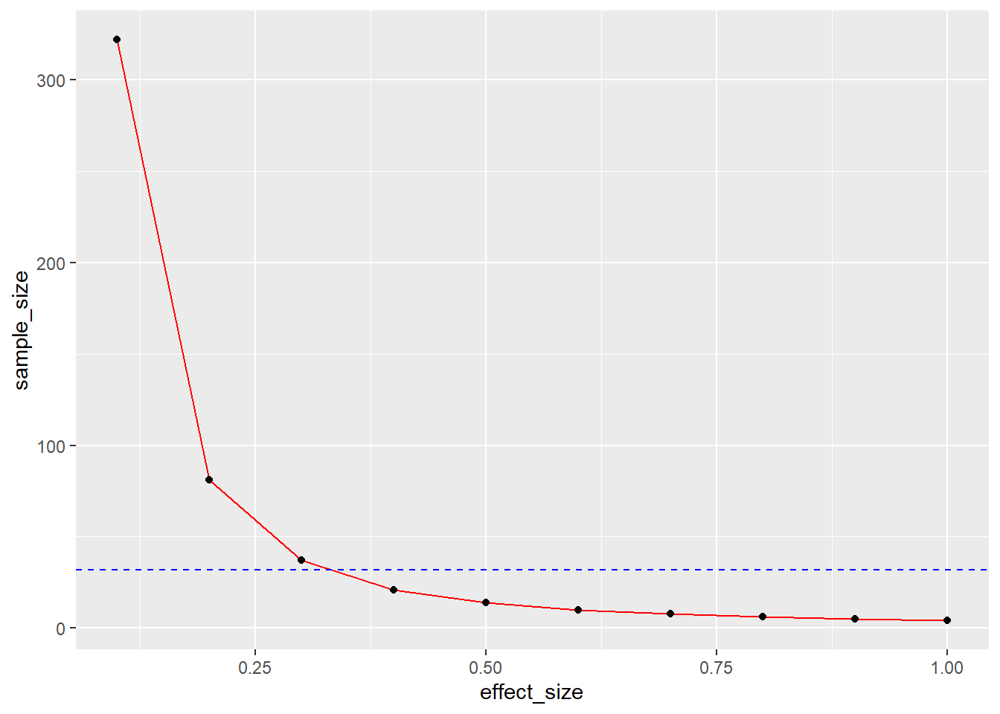
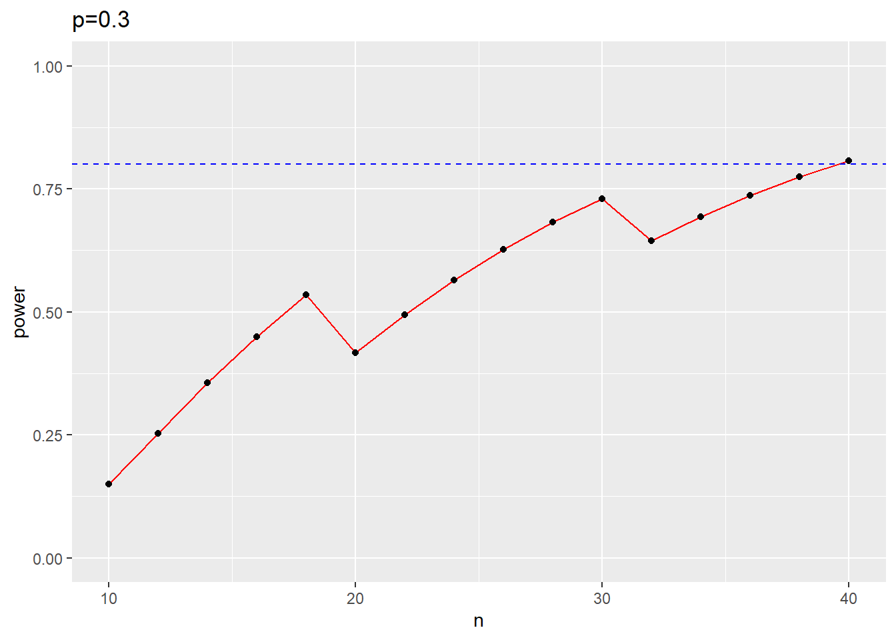
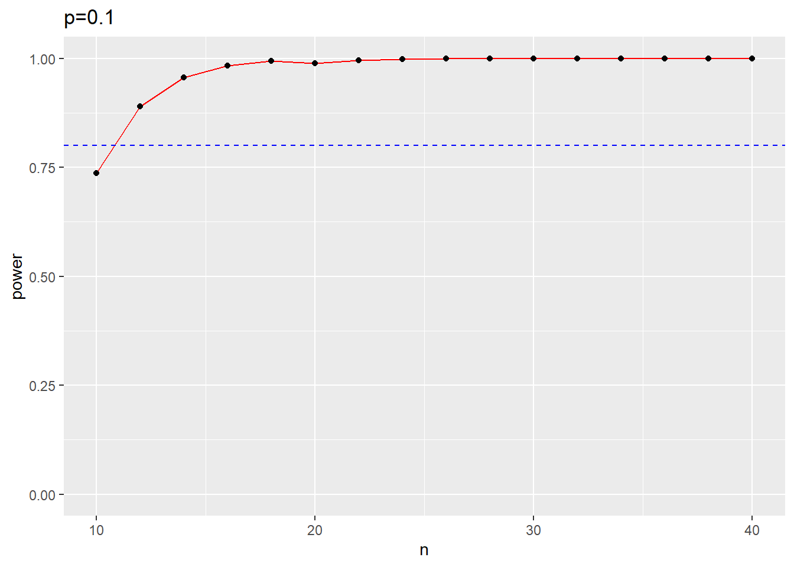
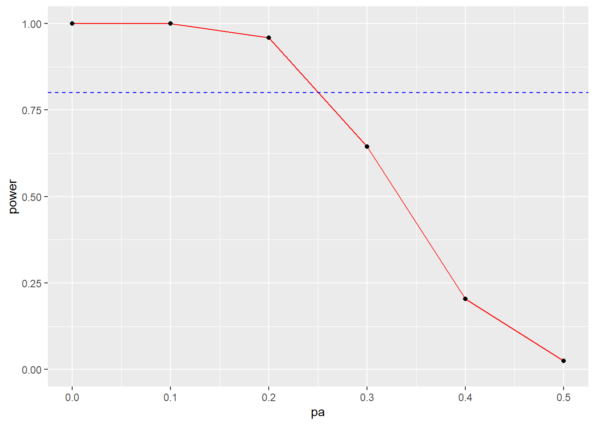

Last updated: 2022-02-11
Checks: 7 0
Knit directory: Collaborations/
This reproducible R Markdown analysis was created with workflowr (version 1.7.0). The Checks tab describes the reproducibility checks that were applied when the results were created. The Past versions tab lists the development history.
Great! Since the R Markdown file has been committed to the Git repository, you know the exact version of the code that produced these results.
Great job! The global environment was empty. Objects defined in the global environment can affect the analysis in your R Markdown file in unknown ways. For reproduciblity it’s best to always run the code in an empty environment.
The command set.seed(20210523) was run prior to running the code in the R Markdown file. Setting a seed ensures that any results that rely on randomness, e.g. subsampling or permutations, are reproducible.
Great job! Recording the operating system, R version, and package versions is critical for reproducibility.
Nice! There were no cached chunks for this analysis, so you can be confident that you successfully produced the results during this run.
Great job! Using relative paths to the files within your workflowr project makes it easier to run your code on other machines.
Great! You are using Git for version control. Tracking code development and connecting the code version to the results is critical for reproducibility.
The results in this page were generated with repository version 5d9e8a6. See the Past versions tab to see a history of the changes made to the R Markdown and HTML files.
Note that you need to be careful to ensure that all relevant files for the analysis have been committed to Git prior to generating the results (you can use wflow_publish or wflow_git_commit). workflowr only checks the R Markdown file, but you know if there are other scripts or data files that it depends on. Below is the status of the Git repository when the results were generated:
Ignored files:
Ignored: analysis/.Rhistory
Unstaged changes:
Modified: analysis/index.Rmd
Note that any generated files, e.g. HTML, png, CSS, etc., are not included in this status report because it is ok for generated content to have uncommitted changes.
These are the previous versions of the repository in which changes were made to the R Markdown (analysis/2022_Feb.Rmd) and HTML (docs/2022_Feb.html) files. If you’ve configured a remote Git repository (see ?wflow_git_remote), click on the hyperlinks in the table below to view the files as they were in that past version.
| File | Version | Author | Date | Message |
|---|---|---|---|---|
| Rmd | 5d9e8a6 | Han | 2022-02-11 | 2/11/2022 |
| html | 5d9e8a6 | Han | 2022-02-11 | 2/11/2022 |
| Rmd | 5045e61 | Han | 2022-02-09 | 2/9/2022 |
| html | 5045e61 | Han | 2022-02-09 | 2/9/2022 |
| Rmd | 44241de | Han | 2022-02-08 | 2/8/2022 |
| html | 44241de | Han | 2022-02-08 | 2/8/2022 |
| Rmd | b036da9 | Han | 2022-02-07 | 2/7/2022 |
| html | b036da9 | Han | 2022-02-07 | 2/7/2022 |
| Rmd | 0eca9f6 | Han | 2022-02-04 | 2/4/2022 |
| html | 0eca9f6 | Han | 2022-02-04 | 2/4/2022 |
perform a sample size calculation with an 80% power, on the basis of reported clinical and radiographical failure rates of pulpotomy treatment which ranges between 10%-20% (for each) in the literature. `Will it it be possible if we make estimatations of sample sizes for 10%, 12% and 15% differences (respectively) between the groups with significance level of 0.05? The observed sample is summarized in the Table
| group | success | failure | total | setting 1 | setting 2 | setting 3 | |
|---|---|---|---|---|---|---|---|
| 1 | 32 | 2 | 34 | 10% | 17% | 25% | |
| 2 | 32 | 1 | 33 | 10% | 17% | 25% | |
| 3 | 34 | 0 | 34 | 0% | 5% | 10% | |
| total | 98 | 3 | 101 |
Question: With different failure rates under each setting, what is the sample size required to achieve 80% power?
3 different scenarios, the error rate in group 1, 2 are 10%, 17% and 25% and error rate in group 3 are 0%, 5% and 10%, resulting in the error difference 10%, 12%, 15%. Let \(p_i\) be the failure rate, \(i=1, 2, 3\). Consider the test \(H_0:p_1=p_2=p_3\), \(H_a:not ~all~ of~ them ~are ~equal\), Use chi square test \[X^2=\sum \frac{(n_{ij}-\hat{\mu}_{ij})^2}{\hat{\mu}_{ij}}\],
where \(n_{ij}\) are observed counts and \(\hat{\mu}_{ij}\) are expected counts under \(H_0\). \(H_0\) is rejected when \(X>X_{\alpha}(2)\)
n1=34; n2=33; n3=34
fail1=2; fail2=1; fail3=0
p_est=3/(n1+n2+n3)
nij=c(32,2,32,1,34,0)
muij=c(n1*(1-p_est), n1*p_est, n2*(1-p_est), n2*p_est, n3*(1-p_est), n3*p_est)
test_stat=sum((nij-muij)^2/muij)
test_stat # critical value is 5.99 at 5% with 2 DF. [1] 2.0416291-pchisq(test_stat, df=2, ncp = 0, lower.tail = TRUE, log.p = FALSE)[1] 0.3603014Since all sample size are nearly identical, could use balanced study design.
see this example
overall_var=p_est*(1-p_est)*(n1+n2+n3)
########## the key is to set within.var
#group_means=c(0/n1, 1/n2, 2/n3)
group_means=c(0.17,0.17, 0.05 )
#group_means=c(0.17, 0.17, 0.05)
#within.var=0.03 seems reasonable
p=power.anova.test(groups = length(group_means),
between.var = var(group_means), within.var=0.9, # use variance in group 1
power=0.8,sig.level=0.05,n=NULL)
p
Balanced one-way analysis of variance power calculation
groups = 3
n = 904.2514
between.var = 0.0048
within.var = 0.9
sig.level = 0.05
power = 0.8
NOTE: n is number in each groupuse function pwr.annova.test the example
library(pwr)
pwr.anova.test(k = 3, f = 5/3, sig.level = 0.05, power = 0.8)
Balanced one-way analysis of variance power calculation
k = 3
n = 2.470566
f = 1.666667
sig.level = 0.05
power = 0.8
NOTE: n is number in each groupeffect_size=seq(0.1,1, by=0.1); sample_size=numeric()
for (i in 1:length(effect_size))
{
sample_size_calculation=pwr.anova.test(k=3, f=effect_size[i], sig.level=0.05, power=0.8)
sample_size[i]=sample_size_calculation$n
}
ggplot(data=data.frame(effect_size=effect_size, sample_size=round(sample_size)), aes(x=effect_size, y=sample_size, group=1)) +
geom_line(color="red")+
#geom_hline(yintercept=0.8, linetype="dashed", color = "blue")+
geom_point()+
geom_hline(yintercept=32, linetype="dashed", color = "blue")
#sample_size=pwr.anova.test(k=3, 0, sig.level=0.05, power=0.8)where \(f\) is effect size calculated as \(\frac{\sigma_{means}}{\sigma_{pop/n}}\)。 where \(\sigma_{means}\) is the standard deviation of the k means and \(\sigma_{pop/n}\) is the common standard deviation of the k groups. These two quantities are also known as the between-group and within-group standard deviations.
sigma_means=sd(c(0.1, 0.1, 0))
sigma_pop=(101*(3/101)*(1-3/101))^0.5
f=sigma_means/sigma_pop
pwr.anova.test(k=3, f=0.3, sig.level=0.05, power=0.8)
Balanced one-way analysis of variance power calculation
k = 3
n = 36.70126
f = 0.3
sig.level = 0.05
power = 0.8
NOTE: n is number in each groupBecause sample size is not big (<40), it’s better to assume binomial distribution for number of failures, \(X\). Consider the hypothesis test, \(H_0: p=p_0\) vs \(H_a: p< p_0\). The power is defined as \(P(reject~ H_0|H_a)=P(X<=X_0|p)=\sum_{X=0}^{X_0} {n \choose k}p^k(1-p)^{n-k}\), so power is a function of following three parameters
n=seq(10, 40, by=2) # vary sample size from 10 to 40
p0=0.5
k=qbinom(0.05, n, p0)-1 # significance level 0.05; p_0=0.5
pa=0.3 # pa is any value within H_a=====
power=pbinom(k, n, pa) # calculate power when p=pa
ggplot(data=data.frame(n, k, power), aes(x=n, y=power, group=1)) +
geom_line(color="red")+
geom_hline(yintercept=0.8, linetype="dashed", color = "blue")+
geom_point()+
ylim(c(0,1))+
ggtitle("p=0.3")
n=seq(10, 40, by=2) # vary sample size from 10 to 40
p0=0.5
k=qbinom(0.05, n, p0)-1 # significance level 0.05; p_0=0.5
pa=0.2 # pa is any value within H_a
power=pbinom(k, n, pa) # calculate power when p=pa
ggplot(data=data.frame(n, k, power), aes(x=n, y=power, group=1)) +
geom_line(color="red")+
geom_hline(yintercept=0.8, linetype="dashed", color = "blue")+
geom_point()+
ylim(c(0,1))+
ggtitle("p=0.2")n=seq(10, 40, by=2) # vary sample size from 10 to 40
k=qbinom(0.05, n, p0)-1 # significance level 0.05; p_0=0.5
pa=0.1 # pa is any value within H_a
power=pbinom(k, n, pa) # calculate power when p=pa
ggplot(data=data.frame(n, k, power), aes(x=n, y=power, group=1)) +
geom_line(color="red")+
geom_hline(yintercept=0.8, linetype="dashed", color = "blue")+
geom_point()+
ylim(c(0,1))+
ggtitle("p=0.1")
n=32
p0=0.5
k=qbinom(0.05, n, p0)-1 # significance level 0.05; p_0=0.5
pa=seq(0, p0, by=0.1)
power=pbinom(k, n, pa) # calculate power when p=pa
ggplot(data=data.frame(n, k, power), aes(x=pa, y=power, group=1)) +
geom_line(color="red")+
geom_hline(yintercept=0.8, linetype="dashed", color = "blue")+
geom_point()+
ylim(c(0,1))
In two independent samples, \(p_1, p_2\) are sample proportions. Consider the test \(H_0:p_1-p_2=p_0\) vs \(H_a:p_1-p_2>p_0\), \(p_0\) is the specified difference. Use test statistics \[Z=\frac{\hat{p_1}-\hat{p_2}-p_0}{\sqrt{\hat{p}(1-\hat{p}(1/n_1+1/n_2))}}\],
where \(\hat{p_1}=\frac{No.X=1}{n_1}, \hat{p_2}=\frac{No.Y=1}{n_2}\) are estimated proportions in two samples, and \(\hat{p}=\frac{No.X=1+No.Y=1}{n_1+n_2}\) in the combined sample. Under null hypothesis, \(Z\sim N(0.1)\) approximately. The test needs to be rejected when \(Z>Z_{1-\alpha}\), e.g. \(Z_{0.95}=1.64\).
sessionInfo()R version 4.1.2 (2021-11-01)
Platform: x86_64-w64-mingw32/x64 (64-bit)
Running under: Windows 10 x64 (build 18363)
Matrix products: default
locale:
[1] LC_COLLATE=English_United States.1252
[2] LC_CTYPE=English_United States.1252
[3] LC_MONETARY=English_United States.1252
[4] LC_NUMERIC=C
[5] LC_TIME=English_United States.1252
attached base packages:
[1] stats graphics grDevices utils datasets methods base
other attached packages:
[1] pwr_1.3-0 forcats_0.5.1 stringr_1.4.0 dplyr_1.0.7
[5] purrr_0.3.4 readr_2.1.1 tidyr_1.1.4 tibble_3.1.6
[9] ggplot2_3.3.5 tidyverse_1.3.1
loaded via a namespace (and not attached):
[1] Rcpp_1.0.8 lubridate_1.8.0 assertthat_0.2.1 rprojroot_2.0.2
[5] digest_0.6.29 utf8_1.2.2 R6_2.5.1 cellranger_1.1.0
[9] backports_1.4.1 reprex_2.0.1 evaluate_0.14 highr_0.9
[13] httr_1.4.2 pillar_1.6.5 rlang_0.4.12 readxl_1.3.1
[17] rstudioapi_0.13 whisker_0.4 jquerylib_0.1.4 rmarkdown_2.11
[21] labeling_0.4.2 munsell_0.5.0 broom_0.7.11 compiler_4.1.2
[25] httpuv_1.6.5 modelr_0.1.8 xfun_0.29 pkgconfig_2.0.3
[29] htmltools_0.5.2 tidyselect_1.1.1 workflowr_1.7.0 fansi_1.0.2
[33] crayon_1.4.2 tzdb_0.2.0 dbplyr_2.1.1 withr_2.4.3
[37] later_1.3.0 grid_4.1.2 jsonlite_1.7.3 gtable_0.3.0
[41] lifecycle_1.0.1 DBI_1.1.2 git2r_0.29.0 magrittr_2.0.1
[45] scales_1.1.1 cli_3.1.1 stringi_1.7.6 farver_2.1.0
[49] fs_1.5.2 promises_1.2.0.1 xml2_1.3.3 ellipsis_0.3.2
[53] generics_0.1.1 vctrs_0.3.8 tools_4.1.2 glue_1.6.0
[57] hms_1.1.1 fastmap_1.1.0 yaml_2.2.2 colorspace_2.0-2
[61] rvest_1.0.2 knitr_1.37 haven_2.4.3